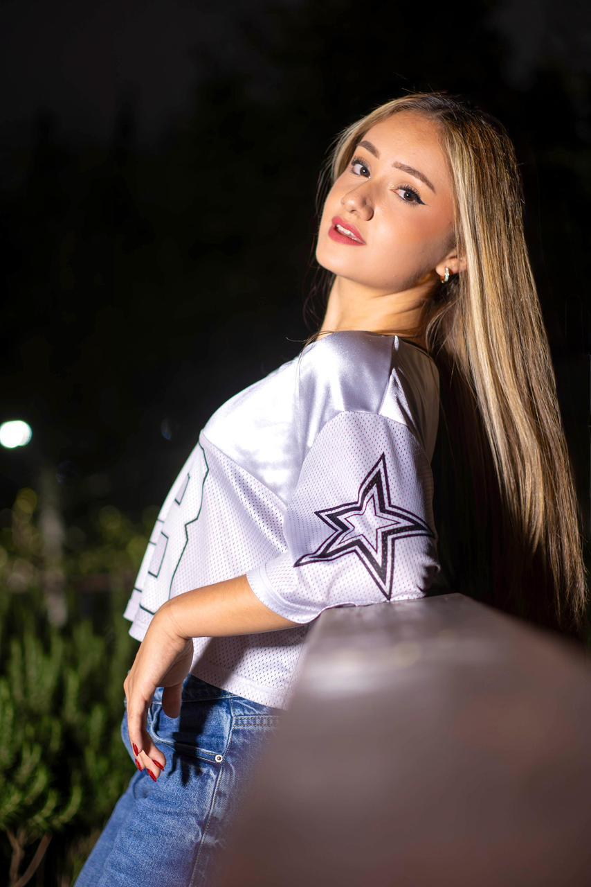
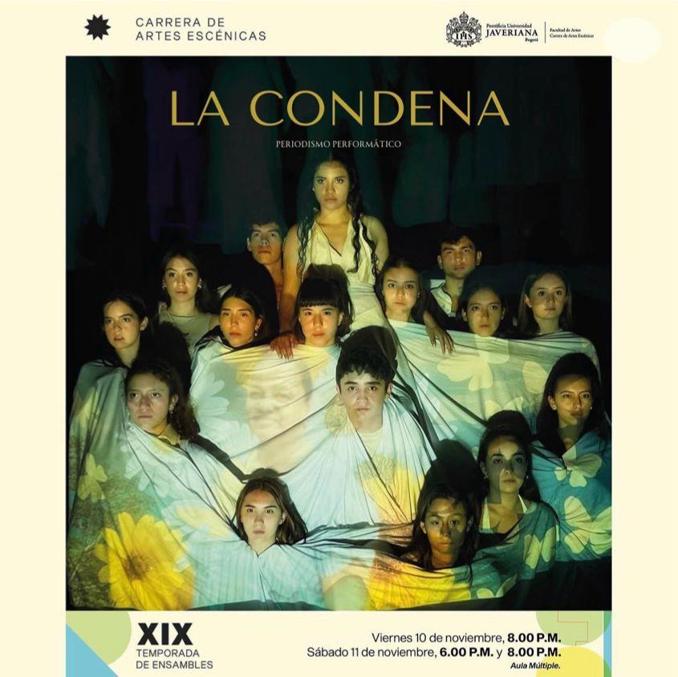
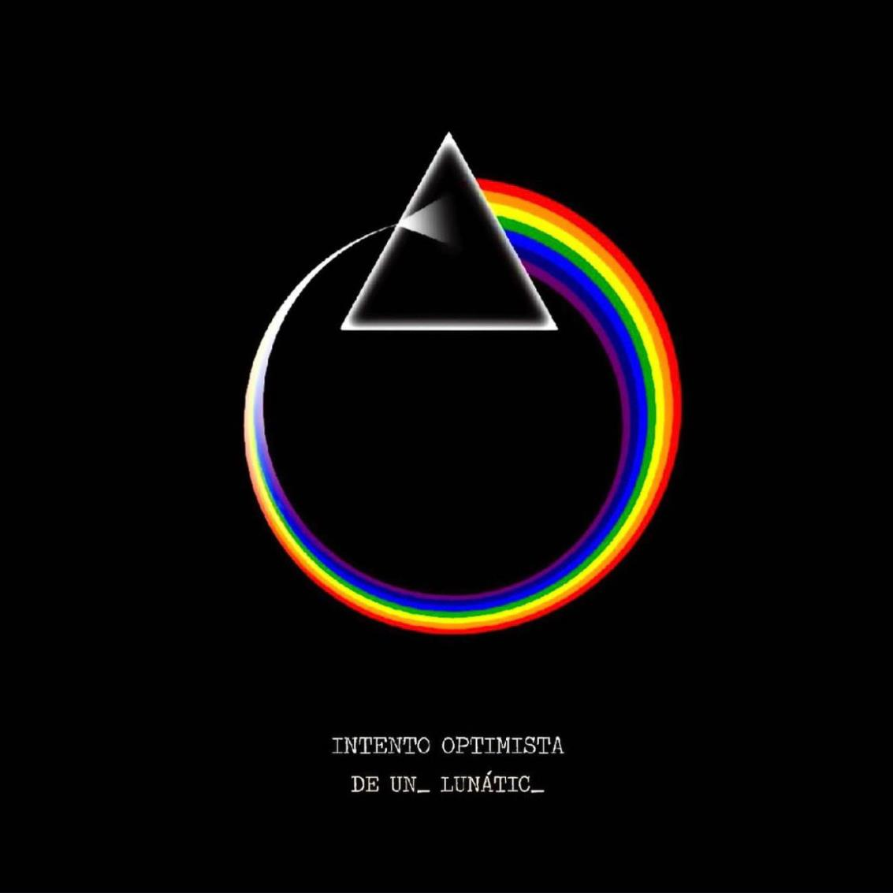
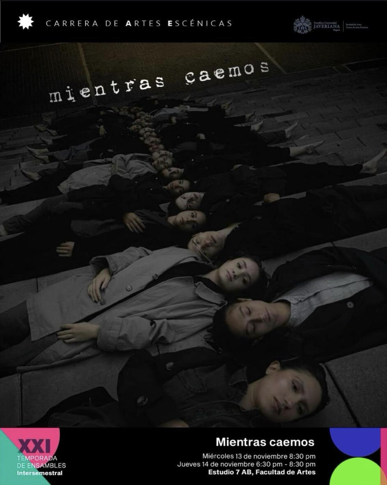
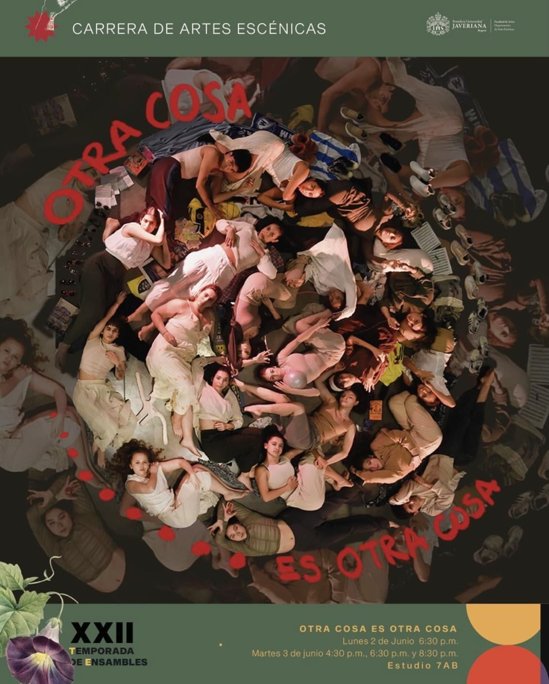
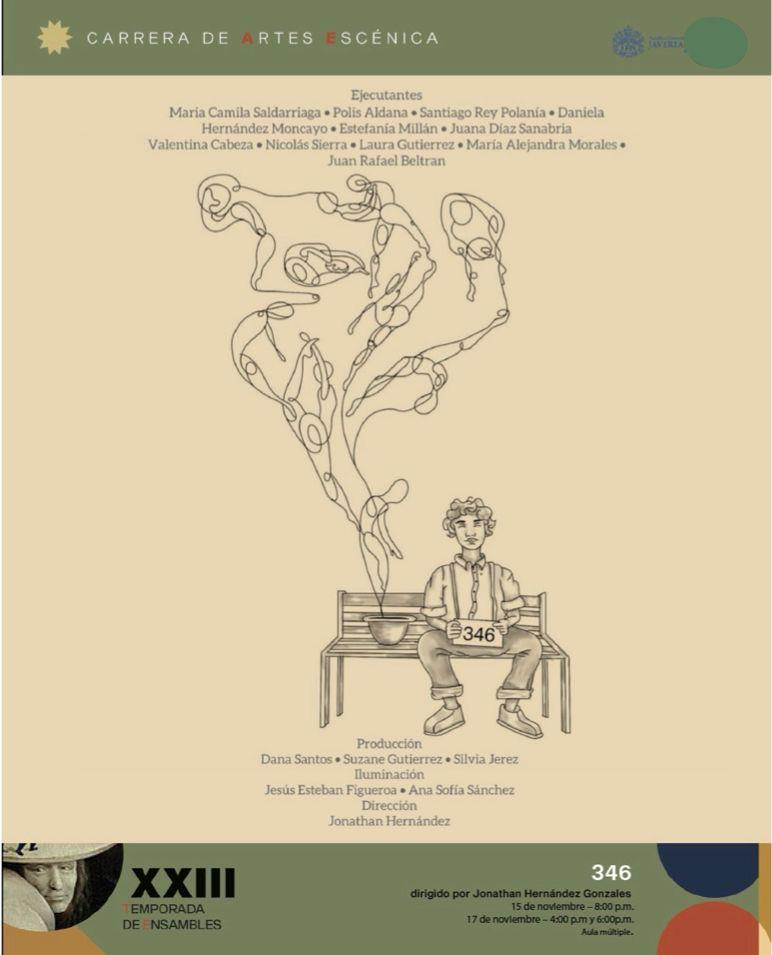
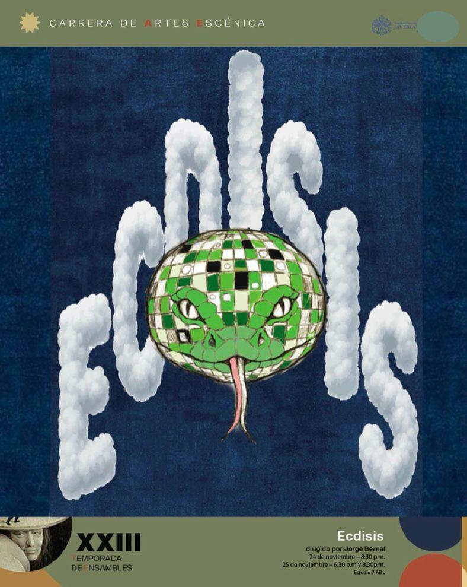
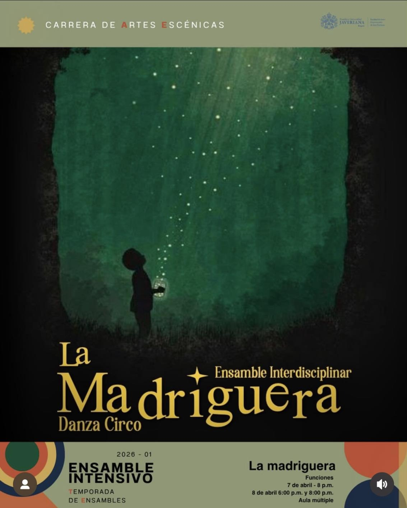

Evaluación de Pares
Compañeras de vuelo · Haz click en cada compañera para leer su evaluación

Desde los primeros momentos que estoy en la universidad conozco a Aleja, desde aquella audición que me permitiría conocerla mejor tiempo después y desde esas primeras clases que compartimos. Aunque al inicio no éramos tan cercanas, siempre hubo algo en ella que admiré y que sentí que nos haría con el tiempo más unidas: una forma muy sincera de estar, de entregarse a lo que hacía y de buscar con el corazón. Desde ese momento la veía como una artista en formación muy comprometida, con una pasión tranquila pero constante por encontrar su lugar.
Como una mariposa, su proceso no comenzó en el vuelo, sino en esas primeras etapas más silenciosas e inciertas. Haber estado ahí, tanto en lo claro como en la duda, me permitió ver la profundidad de su transformación y entender que cada paso, por pequeño que pareciera, hacía parte de algo mucho más grande. Durante el ciclo básico, que compartimos durante dos semestres, empezamos a acercarnos más. Coincidimos en clases de danza, actuación y somática, espacios donde poco a poco fuimos compartiendo más, encontrándonos desde el hacer, desde el cuerpo, desde lo que cada una estaba atravesando. Fueron clases donde la veía siempre aferrada a su deseo de crecer como artista, con una entrega muy honesta y constante. La danza, especialmente, fue un lugar que nos conectó mucho, y ahí siempre había algo en ella que yo siempre resalté: ese brillo tan particular cuando se esforzaba por llevar todo a su máxima expresión. Era una entrega que no pasaba desapercibida.
En su inicio en la carrera, la siento como ese primer estado, ese "huevo" cargado de posibilidades, pero también de expectativa y preparación. Ahí también empezó nuestra cercanía. Compartimos procesos muy importantes, como nuestro primer ensamble, La Condena, donde no solo coincidimos escénicamente, sino que empezamos a acompañarnos de verdad. Recuerdo cómo su manera de estar se hacía evidente: comprometida, constante, atenta a lo que sucedía alrededor, encaminada aún por la danza y por la creación con esta. Su rendimiento no solo era sólido, sino profundamente entregado; no se trataba solo de cumplir, sino de sostener el ensamble, de cuidar lo que estábamos construyendo entre todos. Había en ella una disposición muy honesta hacia la creación, una forma de estar que sumaba, que acompañaba, que hacía que el proceso se sintiera más firme. Compartir ese primer ensamble hizo que empezáramos a acompañarnos como verdaderas artistas, desde adentro del proceso. Fui testigo de cómo iba comprendiendo lo que implica habitar un ensamble: estar presente desde el vínculo, desde la confianza y desde ese compromiso silencioso que sostiene lo colectivo. Y al mismo tiempo, ese espacio nos permitió construir una forma de trabajar juntas, de escucharnos y de sostenernos, entendiendo que la escena también se teje en relación. Nos permitió estrechar nuestra amistad.
En la técnica de Ballet y Moderno también pude estar muy cerca de una parte importante de su proceso. Las dos llegábamos con una base en Ballet, y eso hacía que compartiéramos un mismo punto de partida, era un lenguaje que ya conocíamos. Pero cuando apareció el moderno para ambas fue algo nuevo, otra forma de moverse, de soltar y de romper con lo que el Ballet ya había marcado. Y ahí fue muy claro verla. Lo que podía sentirse como un choque, en ella se volvió un reto que asumió con mucha fluidez. Se fue adaptando muy rápido, dejando que su cuerpo aprendiera desde otro lugar, más disponible y menos rígido. Hubo en ella una capacidad muy bonita de escuchar su cuerpo, de dejar que ese nuevo lenguaje entrara sin resistencia. Además, el hecho de estar siempre ubicadas juntas en ese salón de clase hizo que ese proceso se volviera aún más especial para mí. Compartir ese espacio a su lado lo hizo más cercano, más llevadero, incluso más divertido. Son de esos momentos que terminan marcando el proceso sin que uno se dé cuenta en el instante.
Considero que la danza, durante esta etapa de Aleja, era como la hoja de la que la oruga se sostiene: constante, segura y necesaria. Pero también como pasa en toda metamorfosis, llegó un punto en el que ese mismo lugar empezó a generar dudas o incomodidades. Y ahí apareció algo muy valioso en el proceso de Aleja: un tránsito donde el Circo llegó a su vida, no como algo ajeno, sino como un espacio donde su cuerpo empezó a sentirse más libre y mucho más vivo. Un espacio donde ella empezó a verse aún más radiante que nunca.
Y es justamente en ese proceso donde empieza a verse una Aleja que empieza a aprender a volar poco a poco. Como si, dentro de esa crisálida, algo nuevo comenzara a formarse. En técnica básica de Circo fue muy evidente: la sentí más fuerte, más presente y conectada con lo que hacía. Las acrobacias y los malabares no fueron solo una exploración de clase; había un interés real y una entrega completamente distinta. También fue muy potente y valioso verla reconectar con habilidades que ya habitaban en su cuerpo desde la gimnasia, conociendo su historia previa a la universidad, pero ahora desde un lugar más consciente y decidido. Aunque no compartí con ella el laboratorio de Aéreos, en la técnica de Circo era claro que ese trabajo y los aéreos la estaban completando profundamente. Todo empezaba a alinearse en ella y se le notaba en su forma de estar. Desde mi percepción, nunca se sintió pasajero. Había una convicción creciendo en ella, algo que la sostenía y la impulsaba.
En las clases más teóricas también fue muy especial compartir con ella. En puestas en escena, en Cuerpo y nuevos medios, en Teatro Musical y en Circo siempre estuvimos cerca, acompañándonos en todo el proceso de aprendizaje. Había algo muy bonito en cómo nos apoyábamos: en las dudas, en los momentos donde algo no salía, pero también en lo que íbamos entendiendo y podíamos compartir la una con la otra. Pero más allá de lo académico, esos espacios también se volvieron muy nuestros. Siempre encontrábamos la forma de compartir algo más: conversaciones largas, risas, comida, pequeños momentos que hacían que las clases fueran mucho más que una obligación. Eran espacios donde aprendíamos, pero también donde construíamos recuerdos que se quedan. Y creo que eso también hizo que nuestro proceso fuera distinto, más cercano, más humano y más lleno de vida. Definitivamente una amistad sincera como artistas.
Al mismo tiempo, su proceso no se ha quedado solo en su vuelo personal, y eso es algo que admiro mucho de ella. He podido verla habitar otros lugares dentro de la escena, como la producción y la asistencia de dirección, y ahí aparece otra forma muy bonita de ser artista. No es solo la Aleja que vuela, sino también la que sostiene, la que cuida, la que está pendiente de todo y de todos. Su proceso como productora también ha sido algo que admiro profundamente. En Mientras Caemos, donde yo fui ejecutante, pude verla desde otro lugar, uno que no siempre es visible pero que sostiene todo lo demás. Fue una productora increíble: muy organizada, atenta a cada detalle, siempre dispuesta a ayudar y con una actitud que hacía que el proceso se sintiera más ligero, incluso en los momentos de mayor exigencia y dificultad para mi. Sabía escuchar, resolver, anticiparse, y sobre todo, estar. Y siento que fue precisamente esa forma de asumir la labor, con tanta entrega y responsabilidad, lo que hizo que naturalmente pasara a ser asistente de dirección. No fue casualidad, fue consecuencia de la manera en la que sostuvo ese proceso. Y además, fue excelente en este rol.
Al mismo tiempo, tuvimos la oportunidad de invertir los roles. Yo fui productora en uno de sus ensambles como ejecutante, 346, y ahí pude verla en su lugar de ejecutante, especialmente en los aéreos. Fue muy fuerte verla en escena, porque había una claridad y una presencia que no se pueden fingir. En la Lira ella siempre se sintió y se vio completamente en su elemento: segura, precisa y conectada. Había algo muy orgánico en su movimiento, una forma de habitar el aire que hacía que todo se viera fluido aun cuando detrás hay una exigencia enorme. Para mí fue muy significativo acompañar ese proceso desde otro lugar, verla sostener ese vuelo que tanto ha construido, y reconocer cómo ahí, en ese espacio, brilla con una fuerza muy propia. Fue uno de esos momentos donde se hace evidente que encontró algo que realmente le pertenece.
No ha sido una mariposa solitaria, y creo que ahí también está una de sus mayores fortalezas: en la manera en la que se deja acompañar, en cómo construye con otros, en su apertura y su capacidad de escucha. Nuestra cercanía, desde el inicio, se fue volviendo un lugar de apoyo mutuo muy especial. Siempre hubo un sostenernos, un estar la una para la otra, que se sentía tierno, pero al mismo tiempo muy comprometido con lo que estábamos construyendo como artistas. Crecimos juntas, aprendimos juntas, y de alguna forma nos fuimos acompañando en cada etapa de esta metamorfosis.
Ahora, en este punto final de la carrera, siento que Aleja está en pleno vuelo. No como algo terminado, sino como una mariposa que apenas empieza a recorrer el mundo con las alas que tanto tiempo le tomó construir. Y hay algo que admiro profundamente: que haya encontrado durante este proceso eso que realmente la apasiona, eso que la llena de vida. Porque no todos tenemos la fortuna de descubrirlo con tanta claridad. Sé que ese camino en el circo, en lo aéreo, y en la Lira que tanto la hace ver liberada, la va a llevar lejos, que le va a permitir viajar, seguir aprendiendo, expandirse y cumplir muchos de los sueños que ha construido desde hace años y todos aquellos que sigue anhelando.
Pendiente.
Pendiente.
Hábitat· Book ·
El cuerpo en imagen
Biodiversidad· Reel ·
El cuerpo en movimiento
Ecosistemas· Galería ·
Registro de mis ensambles en la Carrera de Artes Escénicas

La Condena
Dir. Isaac Barbosa y Juliana Atuesta

Intento Optimista de un_ lunátic_
Dir. Arnulfo Pardo y Laura Castiblanco

Mientras Caemos
Dir. Diana Salamank y M. A. Morales

Otra cosa es otra cosa
Dir. Humberto Canessa

346
Dir. Jonathan Hernández

Ecdisis
Dir. Jorge Bernal

La Madriguera
Dir. Humberto Canessa y Leonardo Girón
Tormenta de Nieve
La Tempestad
Creación Colaborativa
Artes Visuales · Música · Escénicas
Agradecimientos
Las alas que me sostuvieron